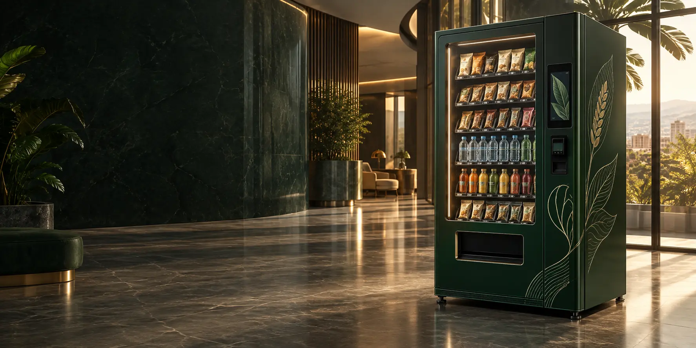

Refreshments, nearby.
Sealed snacks and chilled drinks, available without an extra trip outside the building.
Managed snacks and drinks vending for the places people work, study, wait and meet. A new way Nafaka Foods is bringing convenience to food.

Designed for suitable offices, hospitals, educational institutions, commercial buildings and other shared spaces.
Sealed snacks and chilled drinks, available without an extra trip outside the building.
We handle the proposed machine supply, installation, stocking, monitoring, maintenance and support.
Location, power, access, security and commercial terms are assessed and agreed before installation.
The proposed range does not include fresh or cooked packed meals, hot beverages or alcohol. Product selection is agreed for the location.
The proposal includes cash and cashless payment options, temperature-controlled beverage storage and inventory monitoring. Final features depend on the machine selected.
Extended-hours operation is possible where building access, power and the agreed service arrangements allow it.
Commercial terms are negotiated. The proposal allows for landlord rent or an agreed revenue-sharing model, with electricity charges agreed separately. No specific return, free installation or zero-cost arrangement is promised here.
Review the building, footfall, placement and power.
Confirm the engagement model and commercial terms.
Deliver, commission and stock the equipment.
Check operations and provide user guidance.
Begin service, monitor usage and provide ongoing support.
Let’s start with the location and the people who use it.